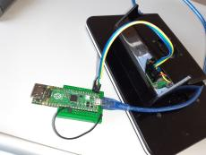
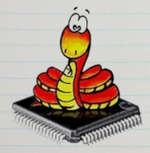

Pico MicroPython (UART REPL + USB networking!)
 
Networking and webserver running completely on core1 (lwIP "sys_timeouts_init()" has to be called on core0).
MicroPython runs on core0 (USB REPL as well as thread support disabled).